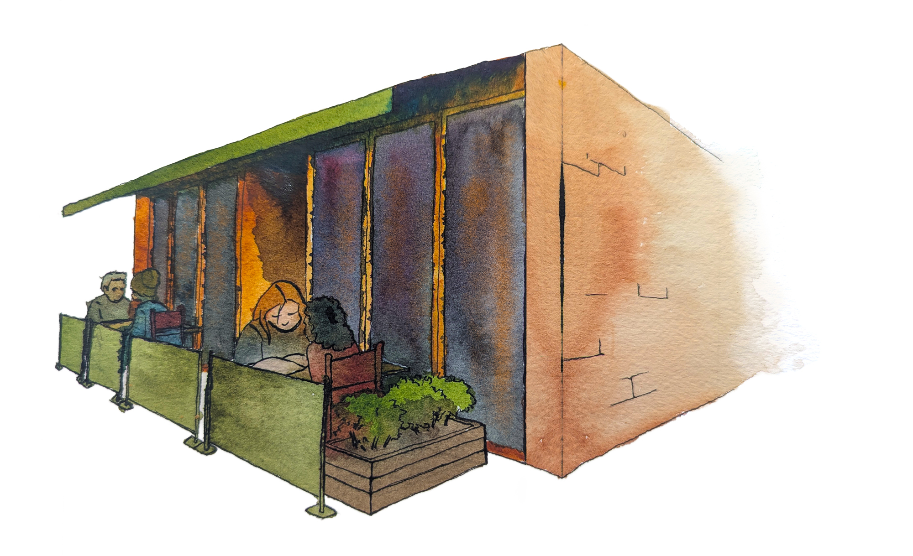
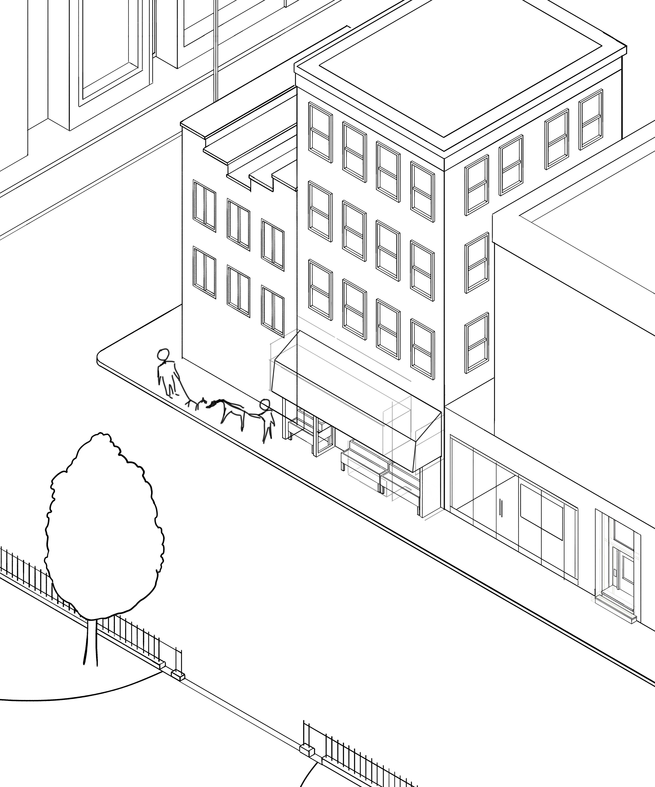
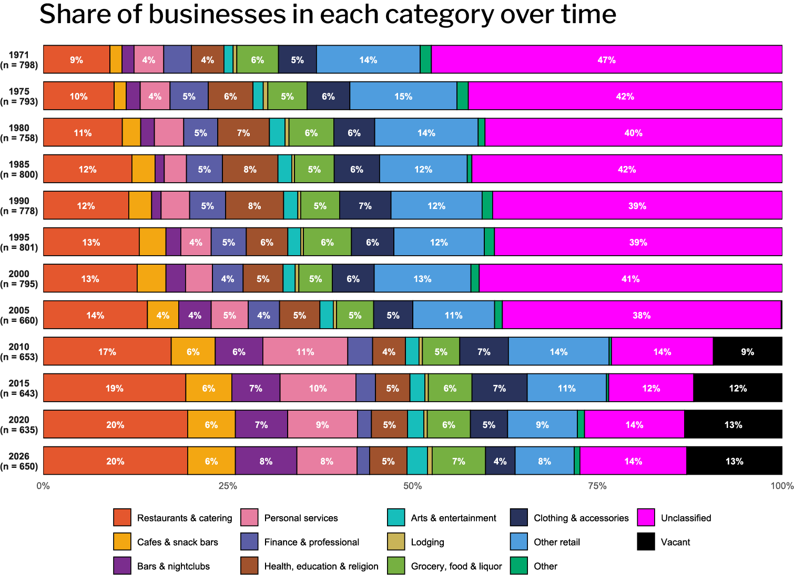

scroll down

Third narrative step details...
Average block length by neighborhood

Chart title - Libre Baskerville 1.8rem bold italic
chart source - Jost 0.9 rem
chart labels - Jost 0.9 rem bold
chart legend heading - Jost 1 rem bold
chart legend - Jost 1 rem regular
Paragraph - Courier Prime 1 rem
Blockquote - "Libre Baskerville 1.1rem"